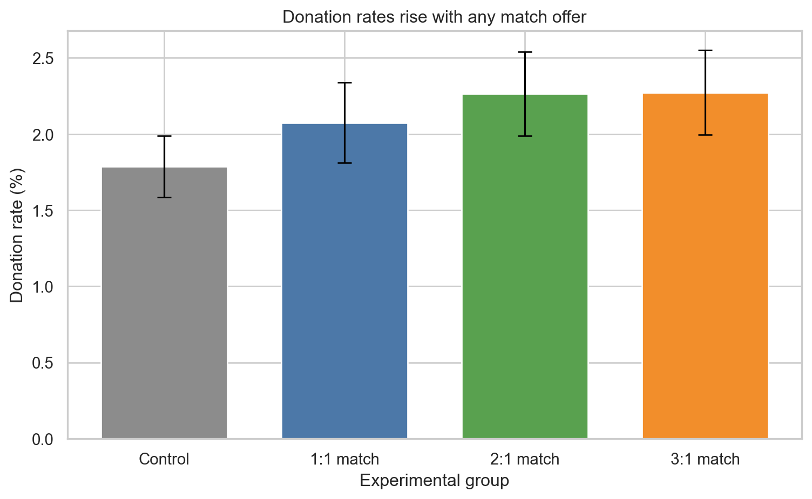

import numpy as np
import pandas as pd
import matplotlib.pyplot as plt
import seaborn as sns
import statsmodels.formula.api as smf
sns.set_theme(style="whitegrid")
df = pd.read_stata("AERtables1-5.dta")
group_labels = {
0.0: "Control",
1.0: "1:1 match",
2.0: "2:1 match",
3.0: "3:1 match",
}
df["group"] = df["ratio"].map(group_labels)Replication of Karlan & List (2007)
Introduction
Karlan and List (2007) study whether matching donations make charitable solicitations more effective. Their experiment randomly assigns potential donors to receive either no match offer or a match offer of different sizes, so differences across groups can be interpreted as causal effects.
In this replication, I focus on two questions. First, does offering any match increase the probability of making a donation? Second, do larger match ratios outperform a simple 1:1 match?
Descriptive Results
I start by comparing the donation rate and average gift size across the four experimental groups.
summary_table = (
df.groupby("group", observed=False)
.agg(
donation_rate=("gave", "mean"),
avg_amount=("amount", "mean"),
avg_positive_amount=("amount", lambda s: s[s > 0].mean()),
n=("gave", "size"),
)
.reindex(["Control", "1:1 match", "2:1 match", "3:1 match"])
)
summary_display = (
summary_table.assign(
donation_rate=lambda x: 100 * x["donation_rate"],
avg_amount=lambda x: x["avg_amount"].round(2),
avg_positive_amount=lambda x: x["avg_positive_amount"].round(2),
)
.rename(
columns={
"donation_rate": "Donation rate (%)",
"avg_amount": "Average amount mailed ($)",
"avg_positive_amount": "Average gift among donors ($)",
"n": "N",
}
)
.round({"Donation rate (%)": 2})
)
summary_display.index.name = ""
summary_display.style.format(
{
"Donation rate (%)": "{:.2f}",
"Average amount mailed ($)": "{:.2f}",
"Average gift among donors ($)": "{:.2f}",
"N": "{:.0f}",
}
)| Donation rate (%) | Average amount mailed ($) | Average gift among donors ($) | N | |
|---|---|---|---|---|
| Control | 1.79 | 0.81 | 45.54 | 16687 |
| 1:1 match | 2.07 | 0.94 | 45.14 | 11133 |
| 2:1 match | 2.26 | 1.03 | 45.34 | 11134 |
| 3:1 match | 2.27 | 0.94 | 41.25 | 11129 |
The descriptive table already points to a clear pattern: every matching treatment has a higher donation rate than the control group. The increase is modest in absolute terms, but meaningful relative to a low baseline donation rate. At the same time, the average gift among people who do donate is fairly similar across groups, suggesting that the main effect of the match offer operates through participation rather than larger gift sizes.
Average Treatment Effect of Any Match Offer
To estimate the overall causal effect of receiving any match offer, I run a linear probability model of the donation indicator on the treatment assignment and report heteroskedasticity-robust standard errors.
ate_model = smf.ols("gave ~ treatment", data=df).fit(cov_type="HC1")
ate_effect = ate_model.params["treatment"]
ate_ci = ate_model.conf_int().loc["treatment"]
control_rate = df.loc[df["treatment"] == 0, "gave"].mean()
ate_results = pd.DataFrame(
{
"Estimate (pp)": [100 * ate_effect],
"95% CI lower": [100 * ate_ci[0]],
"95% CI upper": [100 * ate_ci[1]],
"Control mean (%)": [100 * control_rate],
"Relative increase (%)": [100 * ate_effect / control_rate],
},
index=["Any match vs control"],
).round(2)
ate_results.index.name = ""
ate_results.style.format("{:.2f}")| Estimate (pp) | 95% CI lower | 95% CI upper | Control mean (%) | Relative increase (%) | |
|---|---|---|---|---|---|
| Any match vs control | 0.42 | 0.16 | 0.67 | 1.79 | 23.41 |
The estimated treatment effect is about 0.42 percentage points, with a 95% confidence interval from roughly 0.16 to 0.67 percentage points. Since the control-group donation rate is only about 1.79%, this corresponds to roughly a 23% increase in the probability of giving. This result supports the main conclusion of the paper: offering a match increases the likelihood that a recipient donates.
Does a Larger Match Ratio Matter?
The original experiment also varies the size of the match. To see whether more generous match ratios perform better, I compare the control group to the 1:1, 2:1, and 3:1 match offers separately.
ratio_plot = summary_table.reset_index()
ratio_plot["donation_rate_pct"] = 100 * ratio_plot["donation_rate"]
ratio_plot["se_pct"] = 100 * np.sqrt(
ratio_plot["donation_rate"] * (1 - ratio_plot["donation_rate"]) / ratio_plot["n"]
)
fig, ax = plt.subplots(figsize=(8, 5))
ax.bar(
ratio_plot["group"],
ratio_plot["donation_rate_pct"],
color=["#8c8c8c", "#4c78a8", "#59a14f", "#f28e2b"],
width=0.7,
)
ax.errorbar(
x=np.arange(len(ratio_plot)),
y=ratio_plot["donation_rate_pct"],
yerr=1.96 * ratio_plot["se_pct"],
fmt="none",
ecolor="black",
capsize=5,
linewidth=1.2,
)
ax.set_xlabel("Experimental group")
ax.set_ylabel("Donation rate (%)")
ax.set_title("Donation rates rise with any match offer")
plt.xticks(rotation=0)
plt.tight_layout()
plt.show()
treated_only = df.loc[df["treatment"] == 1].copy()
ratio_model = smf.ols("gave ~ C(ratio)", data=treated_only).fit(cov_type="HC1")
ratio_results = pd.DataFrame(
{
"Estimate (pp)": [
100 * ratio_model.params["C(ratio)[T.2.0]"],
100 * ratio_model.params["C(ratio)[T.3.0]"],
],
"95% CI lower": [
100 * ratio_model.conf_int().loc["C(ratio)[T.2.0]", 0],
100 * ratio_model.conf_int().loc["C(ratio)[T.3.0]", 0],
],
"95% CI upper": [
100 * ratio_model.conf_int().loc["C(ratio)[T.2.0]", 1],
100 * ratio_model.conf_int().loc["C(ratio)[T.3.0]", 1],
],
},
index=["2:1 vs 1:1", "3:1 vs 1:1"],
).round(2)
ratio_results.index.name = ""
ratio_results.style.format("{:.2f}")| Estimate (pp) | 95% CI lower | 95% CI upper | |
|---|---|---|---|
| 2:1 vs 1:1 | 0.19 | -0.19 | 0.57 |
| 3:1 vs 1:1 | 0.20 | -0.18 | 0.58 |
The figure shows that all three match offers outperform the control group, but the gains from moving beyond a 1:1 match are small. In the treated sample, the estimated differences between 2:1 and 1:1, and between 3:1 and 1:1, are both close to zero once sampling uncertainty is taken into account. This suggests that the presence of a match matters more than the exact match ratio.
Conclusion
This replication supports the paper’s main empirical finding. Matching offers increase charitable giving on the extensive margin by making people more likely to donate at all. However, the evidence here does not suggest that larger match ratios generate substantially larger effects than a standard 1:1 match. In practical terms, charities may gain most of the benefit simply by announcing a match, without needing to offer a dramatically more generous ratio.